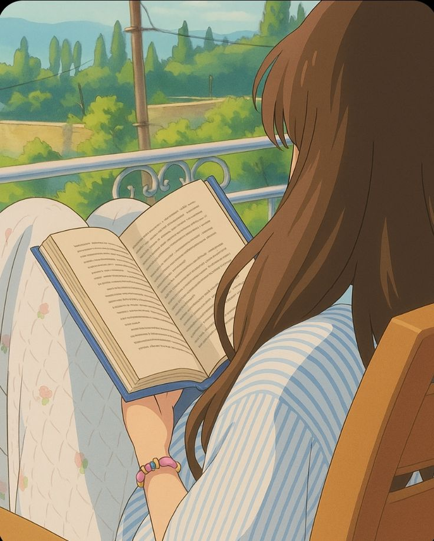

Hobbies are important because students need rest as well as study. Free time helps the mind feel fresh again. Without breaks, students may become tired and lose motivation.
Simple hobbies such as reading, walking, drawing, or listening to music can reduce stress. Relaxing activities make life more enjoyable. Personal time also helps students return to study with better energy.
Hobbies do not waste time when they are part of a balanced routine. They support mental health and make daily life more pleasant.
Rest matters, and healthy hobbies can improve both mood and focus.
